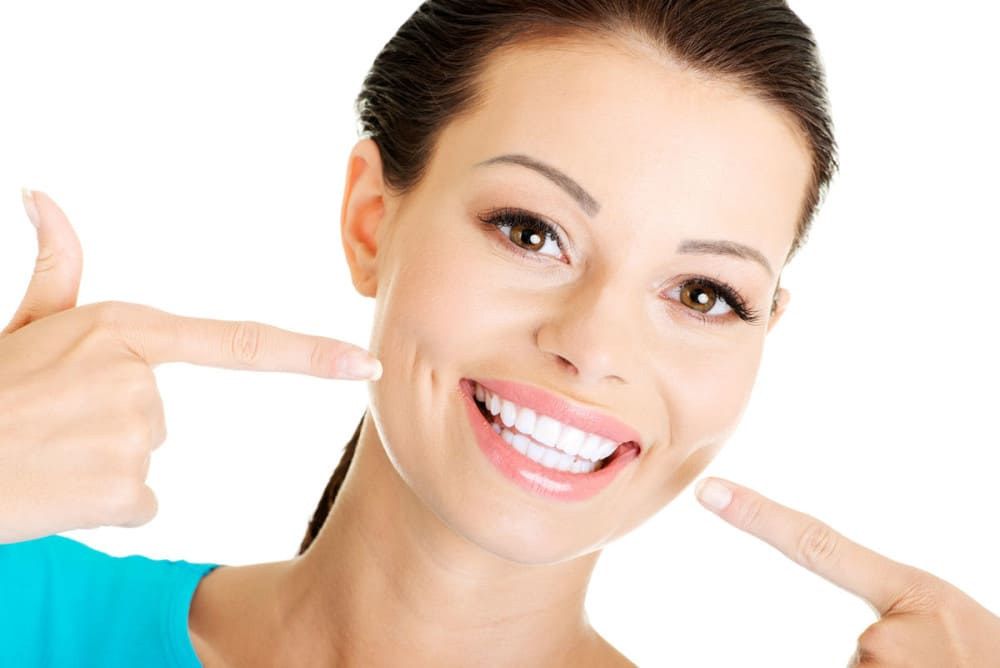
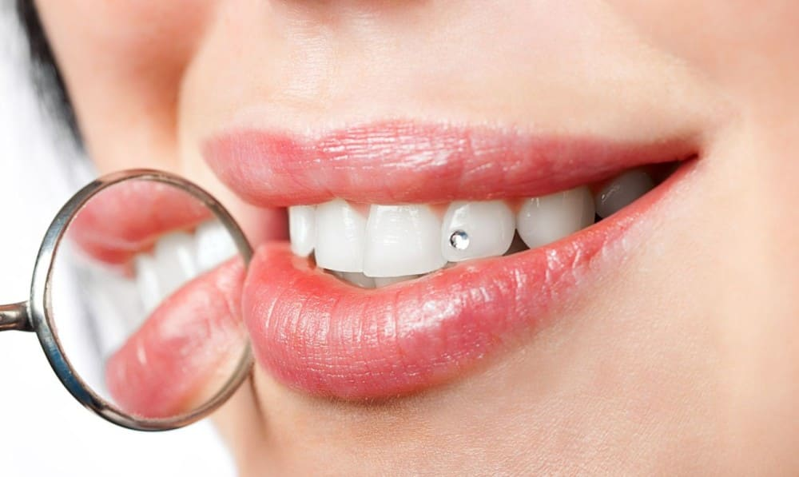
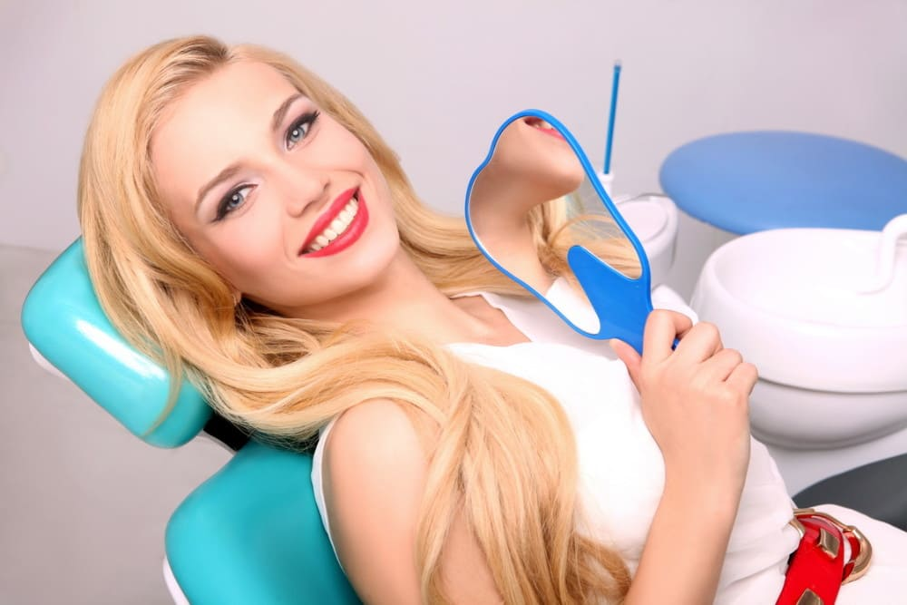

Домашнє відбілювання
Поряд із офісним відбілюванням існує також і домашнє відбілювання зубів. Незважаючи на таку назву, цей метод також є професійним, виконується за призначенням лікаря-стоматолога та під його наглядом. Але на відміну від офісного, домашнє відбілювання займає більше часу, оскільки проводиться не в кабінеті лікаря, а в домашніх умовах у будь-який вільний час.
 Як ми вже говорили, для домашнього відбілювання потрібні капи. Для їх виготовлення лікар-стоматолог знімає зліпки з щелеп та по них відливає гіпсову модель зубного ряду. На гіпсовій моделі спеціальним лаком покривається передня поверхня зубів для створення гелю. Далі на моделі за допомогою вакуумформера виготовляють каппу із пластику.
Особливості домашнього відбілювання:
• форма капи повторює форму зубів, прилягає досить щільно (щоб випадково не впасти), краї не доходять до рівня ясна (щоб гель, що відбілює, не потрапив на ясна;
• найчастіше виготовляють прозорі капи, але бувають кольорові варіанти;
• в комплект разом з каппами входять також шприци з гелем, що відбілює, який лікар-стоматолог підбирає виходячи з конкретної ситуації - сприйнятливість організму, бажаний результат і умови в порожнині рота.
Також лікар призначає термін відбілювання та тривалість щоденного носіння капп. Отримавши всі рекомендації, пацієнт самостійно проводить відбілювання зубів: наносить гель на капи, надягає їх на зуби і займається своїми справами.
Весь процес домашнього відбілювання зубів аналогічний офісному відбілюванню - при тривалому контакті поверхні зубів з гелем відбувається хімічна реакція з виділенням атомарного кисню, який у свою чергу призводить до руйнування з'єднань, що фарбують зуб. Періодичний контроль лікаря над процесом відбілювання зубів необхідний коригування термінів, тривалості носіння чи концентрації гелю.
Офісне відбілювання
Професійне відбілювання зубів або офісне відбілювання зубів – це ефективна та швидка методика, яка дозволяє в короткий термін надати усмішці білість та яскравість.
Переваги методики
Данная процедура проходит в кабинете врача-стоматолога и длится около одного часа. Короткое время сеанса является одним из решающих факторов при выборе методики. Также она обладает и другими преимуществами:
• професійне відбілювання не супроводжується якими-небудь неприємними відчуттями;
• в подавляющем большинстве случаев достичь 100% резульата удается уже после первой процедуры;
• методика не меняет свойств эмали зубов, она полностью безопасна
Вся технологія офісного відбілювання зубів досить проста у виконанні. На видиму поверхню передньої групи зубів наноситься гель, вміст якого входить до 35% перекису водню. Щоб не травмувати ясна, її ізолюють спеціальними тканинами. Весь процес має відбуватися при підвищеній температурі, для чого використовують спеціальні лампові або лазерні світильники, тепле повітря та ін. Під дією тепла відбувається розкладання перекису водню та виділяється атомарний кисень. Виділений кисень руйнує шляхом окислення кольорові сполуки поверхневому шарі емалі. Весь процес можна порівняти з знебарвленням волосся за допомогою перекису водню.
Прикраса зубів кристалами Swarovski
Скайси - це невеликі плоскі декоративні прикраси зі скла, гірського кришталю, кристалів Сваровські, дорогоцінного каміння, призначені спеціально для встановлення на зуб. Скайси мають різноманітний дизайн та є елегантним доповненням до звичайних ювелірних прикрас. Встановлені на зуб блискучі скайси створюють неповторний вираз Вашої індивідуальності.
Скайси, що встановлюються в нашій клініці, мають розмір від 1 до 4 мм в діаметрі залежно від виду. А ось форма їх може бути різною: тут тобі і зірочки, і крапельки, і ромбики, і квадратики, і дельфінчики. Та чи мало всього: модниці оцінять усю різноманітність кристалів Swarovski!
Насамперед лікар обробляє поверхню обраного зуба — знезаражує, фторує. Важливо досягти ідеальної гладкості емалі. Фіксується скайс на спеціальний "клей" - бонд. На закінчення процедури зуб кілька секунд обробляється іонною лампою, щоб страз надійно закріпився. Вся процедура абсолютно безболісна та займає близько 10 хвилин.
Установка скайсов совершенно безвредно для зубов, ведь украшения крепятся к поверхности зубов без какого-либо нарушения эмали. Более того, скайсы можно устанавливать на местах повреждений эмали, пигментных пятен, в составе фотополимерной пломбы и т.д.
Скайси можуть приховувати такі дефекти на поверхні зубів:
• ерозія емалі;
• тріщини;
• поверхневий карієс.
Окрім здорового зуба, скайс можна прикріпити на керамічну коронку чи пломбу. Звикання, що за словами встановили скайси, настає вже за дві години. Якщо не станеться якихось непередбачених ситуацій, то триматися скайс буде від півроку до року. Скайс знімається так само, як будь-яка брекет-система. Потім зуб шліфується і полірується, після чого від скайсів не залишається зовсім ніякого сліду.
Реставрація зубів
Художня реставрація зубів – це не лише відновлення зовнішнього вигляду зуба, але й збереження його функції. Завдяки можливостям сучасної стоматології, сьогодні можна усунути такі дефекти, як тріщини, сколи та проміжки між зубами, зміни кольору емалі (плями та потемніння) або скорегувати непривабливу форму. Перш ніж почати процес реставрації зубів, виконується комплексна діагностика та в разі потреби проводиться лікування карієсу, захворювань ясен і усунення інших стоматологічних проблем
Види художньої реставрації зубів
Існує пряма та непряма художня реставрація зубів. У першому випадку проводиться пряма робота з поверхнею зубів: шліфування, нарощування, корекція та інші процедури. Завдяки комплексній терапії та естетичному відновленню зубів зберігається природній зовнішній вигляд без втрати функції. Тобто зуби стають не лише гарними, але і здоровими.
Естетична стоматологія – це художня реставрація зубівпісля якої ви отримуєте гарну посмішку без застосування протезування. Кожен випадок художньої реставрації зубів є індивідуальним. Перед фахівцями клініки поставлено завдання відновлення особливостей пошкодженого зуба. Крім того, реставрація зубів – це особлива технологія, де застосовуються спеціальні матеріали: композити та компомери. Композити давно широко використовуються для реставрації зубів і можуть служити 5-10 років. Компомери мають гарні естетичні властивості та застосовуються для реставрації зубів порівняно недавно.
При прямому відновленні пацієнту відразу виконують роботи зі зміни кольору або форми зуба, при цьому гарний зуб «виліплюється» відразу ж, у ротовій порожнині пацієнта, із спеціального матеріалу, що твердне під впливом світла. За кілька годин ви зможете побачити готовий результат і насолоджуватися гарною посмішкою. За серйозних пошкоджень не завжди є можливість прямої реставрації.
Непряма реставрація передбачає створення зубів (чи його частин) за умов зуботехнічної лабораторії. Попередньо після підготовки зубів лікар знімає зліпок, потім виготовляється тимчасова пластмасова конструкція. Постійний реставраційний матеріал виконують із цільної кераміки або діоксиду цирконію. Щойно реставраційний елемент готовий, його фіксують на зубах пацієнта. Слід зазначити, що непряме відновлення зубів займає кілька днів. Хороший косметичний ефект та довговічність реставрації можуть забезпечити рівною мірою і композитні матеріали для прямої реставрації та керамічні елементи. Але доцільність використання тієї чи іншої методу у кожному даному випадку визначає лікар.